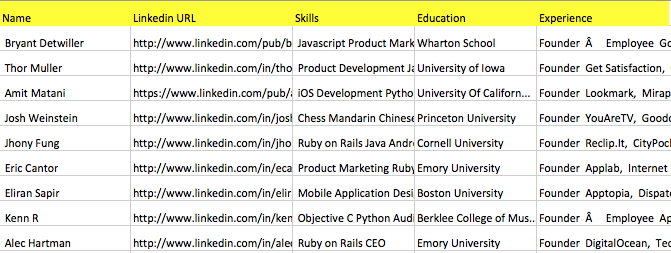
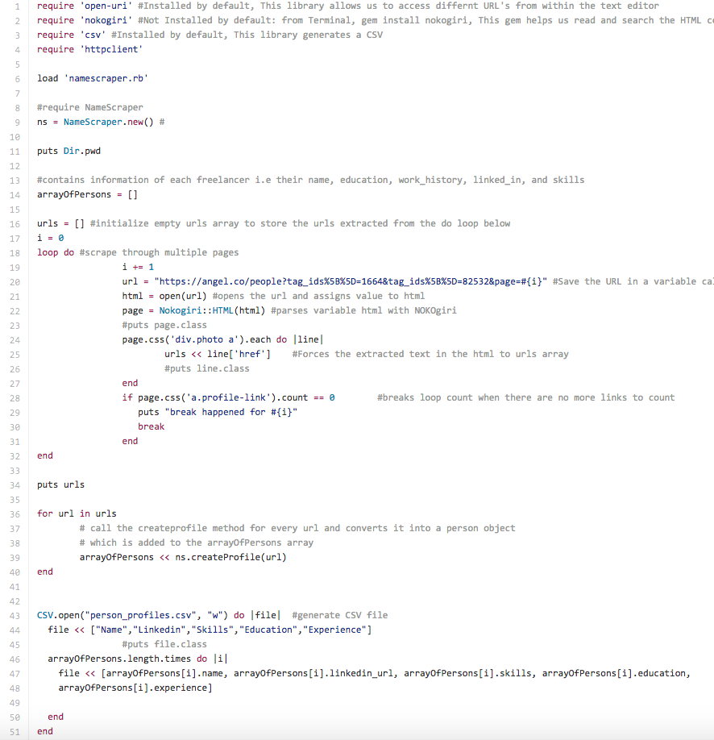
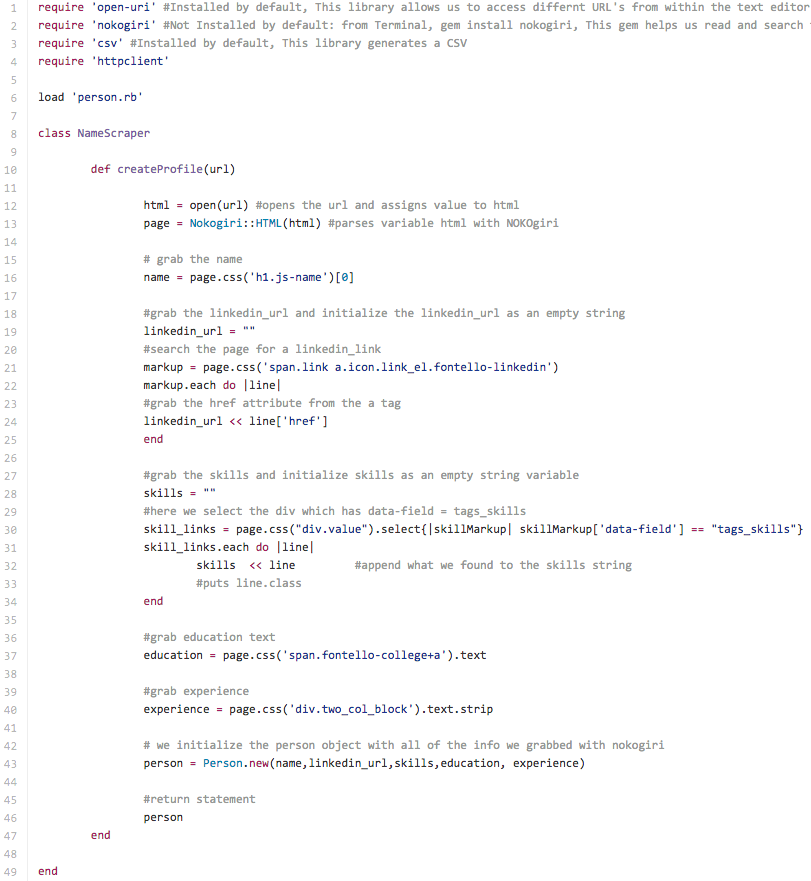
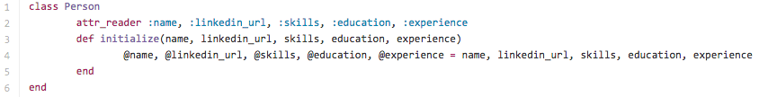

"Get warm introductions to vetted developers, designers and the best companies through your social connections. Speak directly via phone and text through our web platform and mobile app."
My Partner Project was at LiquidTalent. A description of what they do is in the quotes above. For this project, for part 1, I had to implement a web-scraper that scrapes the information of freelance software developers from angel list. This parameters includes their name, linkedin URL, skills, education, and work history.
Part 1: Generate a CSV file containing all the freelancers with their respective parameters
Part 2: Generate text files of the html markup of each freelancer's profile page
"i.e Sample data snapshot of generated CSV file for Part 1"

Lets start with Part 1....
Firstly, the file below is testclass.rb and we want to initialize the proper libraries and gems in lines 1-4. The open-uri library opens a URL within the text editor, Nokogiri parses the web page, CSV is a library that generates a CSV file, and httpclient writes the html markup into outputted text files.
The load 'namescraper.rb' file contains class NameScraper, which is a class that that defines the methods to grab the parameters of each freelancer. On line 6, a new instance of NameScraper is instantiated to varialbe "ns". We will be using the "ns" variable to call the methods in namescraper.rb I will explain that later.
Secondly, we want to grab the URL links of each freelancer, so we declare an empty arrary "urls" to store those urls, in lines 18 to 32, we loop through all URL pages below as seen in the url variable, which contains a listing of freelancers related to search terms Ruby on Rails and NYC. Notice, the counter "i" in url = "https://angel.co/people?tag_ids%5B%5D=1664&tag_ids%5B%5D=82532&page=#{i}", "i" denotes the page number we are looping through, and the loop breaks when it cannot find any more profile links as seen on line 28.
In lines 36-38, object "ns" calls the createProfile method and passes in all the extracted urls from the "urls" arrary

The createProfile method, in namescraper.rb file below, takes in all the url's, and finds all the parameters, and a new person object is created in line 43 with a Person Class, which is loaded from the person.rb file, as seen in the pic below, person.rb is already loaded in namescraper.rb in line 6. In person.rb, we set attr_reader and initialize the parameteres, so this resloves the need for us to create individual methods to grab the parameters in namescraper.rb, this is a common best practice in object-oriented programming, so we don't have multiple lines of code.
In the end, we are able to generate the CSV as createProfile method combines all the parameters into a super arrary called "arraryofPersons" and "arrayOfPersons is being used in the CSV.open method in testclass.rb to generate the CSV file as seen in the sample pic above of the csv file.
This is only Part 1 of the project, Part 2 involves the generation of the html markup of each profile, so if there are 200 freelancers, 200 html files are generated, which for the sake of brevity I will not include it in this website, however, it can be viewed on my github link above.
In conclusion, I continue to provide production support for LiquidTalent to incorporate different search terms into this script I wrote. Furthur search terms include, Python and NYC, ios and NYC, Java and NYC etc... This template can be used not only for Angel List, but for eLance, craiglist etc.. and drastically elimated the need of manual copying and pasting.

